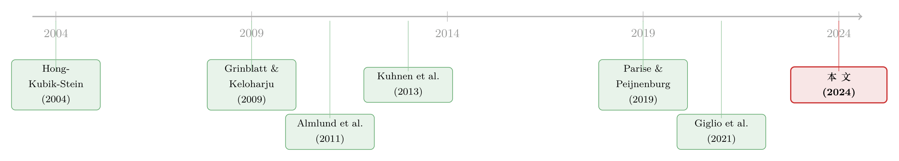

你愿不愿意买股票，先看看你是个什么样的人
本文读的是 Jiang, Peng & Yan (2024, Journal of Financial Economics)：他们对三千多名富裕的美国投资者做问卷，把心理学的「大五人格」搬进投资决策，发现五个性格维度里有两个格外突出——神经质 (Neuroticism) 越高、开放性 (Openness) 越低的人，越不愿意配置股票；更妙的是，这两个性格走的还是两条完全不同的内在通道。
1 一个老问题，和一个一直没填上的窟窿
家庭金融 (household finance) 这几年最让人头疼的一个事实是：人和人的投资组合，差得离谱，而且这种差异非常顽固。同样的年龄、同样的财富、同样的智商，甚至同样的金融素养，两个人的股票仓位还是可以天差地别。Fagereng 等 (2020) 记录了这种持久的异质性，而 Gomes、Haliassos 和 Ramadorai (2021) 在综述里直言：传统的那些个人特征，解释不完这些差异。
更尴尬的是信念这一端。Giglio 等 (2021) 拿一长串人口统计变量去解释投资者对股市的预期，结果只能吃下其中很小的一块——人们为什么有的长期乐观、有的长期悲观，标准变量几乎说不清。
于是问题就摆在这儿了：我们是不是该往解释变量的清单里，添点新东西？
这篇论文的回答是：添「性格」。它的核心假设一句话就能说完——性格上持久的差异，对应着信念与投资决策上持久的差异。听起来朴素，但作者给了两个挺有说服力的先验理由。第一，心理学早就证明性格能预测一大堆人生结果：健康、衰老、婚姻、事业、甚至花钱的方式（Becker 等, 2012）；投资不过是人生决策的又一种形式，凭什么独独逃过性格的手心？第二，心理学家造出来的概念——神经质、尽责性——和经济学家熟悉的风险厌恶、时间偏好，本就是近亲，说不定能互相补位。
2 把「大五」请进门
要谈性格，先得有一把公认的尺子。论文用的是心理学里最稳的那一把：大五人格 (Big Five personality traits)。它来自对「人们如何描述自己」的因子分析，跨越无数种语言和文化，最后都收敛到五个维度上——这件事本身就很神奇，因为各派人格理论彼此长得毫不相像，却殊途同归地落到了同样的五根轴上（McCrae & John, 1992）。
这五根轴是：
- 开放性 (Openness)：是否对新的审美、文化、智识体验敞开，好奇、爱琢磨新点子；
- 尽责性 (Conscientiousness)：是否有条理、负责、自律；
- 外向性 (Extraversion)：能量朝外还是朝内，是否享受与人打交道；
- 宜人性 (Agreeableness)：是否合作、利他、为他人着想；
- 神经质 (Neuroticism)：情绪是否长期不稳，容易被情绪淹没、容易恐慌。
作者用 Condon 和 Revelle (2015) 的 20 题问卷（每个维度 4 题，1–6 分自评）来测这五项。比如测开放性，问你是不是「full of ideas」「original thinkers」；测神经质，问你是不是「worriers」「panic easily」。问卷由美国个人投资者协会（AAII）发放，最终回收 3,325 份有效问卷，受访者财富中位数高达 350 万美元——这不是一群懵懂散户，而是一批真金白银下过场的成熟投资者。性格能在这群人身上起作用，分量就更重。
这里要先按下一个伏笔：性格有一个对实证研究极其友好的性质——它非常稳定。Costa 和 McCrae (1994)、Roberts 和 DelVecchio (2000) 发现，相隔 6 到 30 年测两次，相关系数在 60% 到 80% 之间；Parise 和 Peijnenburg (2019) 用荷兰的代表性样本也确认，跨期相关高达 0.66 到 0.88。这个稳定性后面会救场——先记着。
3 一个最朴素的模型：金钱的归金钱，社交的归社交
要把性格塞进投资决策，得先有个框架告诉我们「性格能从哪几个口子钻进来」。作者搭了一个极简的组合选择模型，刻意保持「不可知论」的姿态，只为组织后面的实证。
市场上两种资产：一个零利率的无风险资产，一个随机收益为 \(r\) 的股票。投资者 \(i\) 把份额 \(w_i\) 投进股票，她权衡两件事。
第一件，是教科书式的均值-方差 (mean-variance) 效用最大化——这里头藏着信念（期望收益 \(E_i[r]\)、方差 \(Var_i[r]\)）和偏好（风险厌恶 \(\gamma_i\)）。
第二件，是为了装下那些非金钱的动机。Hong、Kubik 和 Stein (2004) 早就指出，人买股票不只为了赚钱，也因为享受跟人聊股票的社交乐趣；Pástor 等 (2021) 则提醒，有人买绿色股票是出于伦理和环保。这些动机怎么塞？作者引入一个目标组合 (target portfolio) \(w^*_i\)：如果一个人的决策完全由非金钱动机主导，她想持有的股票份额就是 \(w^*_i\)。爱社交的人，\(w^*_i\) 就高。
于是投资者的目标函数是：
参数 \(\alpha\in[0,1]\) 是投资者给非金钱动机分配的权重。对这个目标函数求一阶条件，整理后得到最优组合：
$$w_i = \frac{(1-\alpha)\,E_i[r]}{(1-\alpha)\gamma_i Var_i[r] + \alpha} + \frac{\alpha}{(1-\alpha)\gamma_i Var_i[r] + \alpha}\,w^*_i$$
这个式子值得盯一会儿。它说投资者的决策，由两块东西决定：一块是她的信念和偏好（\(E_i[r]\)、\(Var_i[r]\)、\(\gamma_i\)），另一块是被 \(w^*_i\) 概括的「别的因素」。两个极端最能说明问题：
- 当 \(\alpha=0\)，第二项消失，回到纯粹的均值-方差解 \(w_i = E_i[r] / (\gamma_i Var_i[r])\)；
- 当 \(\alpha=1\)，第一项消失，决策完全由 \(w^*_i\) 主导，跟传统效用最大化彻底无关。
到这一步，模型其实只干了一件事：它把「性格能从哪进来」掰成了两条通道。第一条是标准通道——性格通过改变 \(E_i[r]\)、\(Var_i[r]\) 或 \(\gamma_i\) 来影响仓位。比如神经质的人若天生悲观（\(E_i[r]\) 低），自然少持股。第二条是非标准通道——性格绕过信念和偏好，直接作用在目标组合 \(w^*_i\) 上。比如更爱社交的人，\(w^*_i\) 更高，仓位也更高。
记住这两条通道。全文的高潮，就是要把神经质和开放性，分别钉到不同的通道上去。
4 四个发现，一步步收紧
有了框架，作者把实证拆成四步，像剥洋葱一样往里收。
第一步，性格能解释信念。 神经质在这里第一个跳出来：神经质高的人，对未来股市平均收益更悲观，给「崩盘」赋予更高的概率，对经济增长更悲观，还预期更高的通胀。而且——这是个很有冲击力的对照——五个性格维度合起来解释股市预期的能力（用调整后 R² 衡量），和所有人口统计变量加总起来的解释力相当。一把心理学的尺子，抵得过一整套人口学变量。
第二步，性格能解释偏好。 开放性在这里登场：开放性高的人更愿意冒险。还有一个很要紧的副产品——投资者自报的期望收益和风险厌恶之间不相关，说明这两个量测的是个人特质的不同侧面，不是一回事。
第三步，也是最关键的一步：把性格连到真实的股票仓位上，再追问机制。 结论是：神经质高、或开放性低的人，股票配置更少。 但真正漂亮的，是这两个性格走的是两条不同的路——
高神经质 → 通过对未来收益和尾部风险的悲观信念压低仓位（标准通道里的「信念」分支）； 低开放性 → 通过更高的风险厌恶压低仓位（标准通道里的「偏好」分支）。
换句话说，两个性格都让人少买股票，机制却南辕北辙：一个怕的是「会跌」，一个怕的是「波动本身」。这正是模型那两条通道在数据里显形。
但故事到这里还有一个反转。 作者把风险厌恶和收益预期都当控制变量塞进回归，神经质和开放性依然显著。这意味着，性格对投资的解释力，超出了传统的信念和偏好所能覆盖的范围——也就是说，第二条「非标准通道」（目标组合 \(w^*_i\)）真的在起作用。性格不只是信念和偏好的「马甲」，它还携带了传统框架装不下的东西。
（把风险厌恶从别的「麻烦」里干净地剥出来，本身就是一门手艺，关于这一点可参见《94% 的人其实都想买股票——把「风险厌恶」和「麻烦」分开来量》。）
第四步，性格还渗进了信念的「形成方式」和社交行为。 神经质和外向性都高的人，更容易在某个投资在身边人里流行起来时跟风买入——这是投资的社交维度。而在如何形成条件预期上，又是神经质和开放性站出来：神经质越高，越相信均值回归 (mean-reversion)；开放性越高，越倾向外推 (extrapolative) 的预期。同样是看着过去的价格往未来推，性格决定了你是「相信会反转」还是「相信会延续」。
（外推与逆向这两类人怎么在数据里被量出来，可参见《外推者与逆向者》；预期里那条隐性的外推暗门，则见《嘴上说的预期，藏不住手上的外推》。）
5 怎么挡住「遗漏变量」这记重拳
这套结果全是相关性，最自然的质疑就是：会不会有个看不见的第三变量，同时驱动了性格和投资？作者用两道防线来挡。
第一道，控制变量管够：在个体层面的回归里塞进收入、财富等一大批人口学变量，外加偏好和信念变量。性格的解释力在这些控制下依然稳健。
第二道，也是更巧的一道，靠性格的稳定性。前面埋的伏笔在这里兑现：既然性格在实现「并发变量」之前就早早定型了（Cobb-Clark & Schurer, 2012；Parise & Peijnenburg, 2019），那它和股票仓位的相关，就很难是「同期遗漏变量」搞出来的——因为性格在时间上是「因」的那一头，先于那些可能的混淆因素。
还有一个意外的「副识别」：作者发现，对金融决策重要的性格，和对别的经济结果重要的性格，不是同一批。劳动经济学里，宜人性 (Agreeableness) 是工资、谈判的关键（Heineck, 2011；Goldsmith-Pinkham & Shue, 2023），可在金融决策里，宜人性几乎没戏，挑大梁的是神经质和开放性。这种「领域特异性」反过来收窄了替代解释的空间：如果性格的解释力只是某个固定的不可观测特征在作祟，那这个特征得偏偏在金融场景里管用、在别的经济场景里失灵——这要求未免太苛刻。
最后，作者还做了一次硬核的样本外 (out-of-sample) 检验：换到澳大利亚的 HILDA 面板和德国的 GSOEP 面板——都是代表性的全国家庭样本。结果，神经质和开放性照样是那两个突出的维度，它们与股票份额的关系，方向上和美国问卷里定性一致。既跨了国家，也跨了商业周期，稳健性相当可观。
6 文献脉络
把这条线索捋一捋，会看到几股力量在汇合。
最早，是把社交动机写进股市参与的 Hong、Kubik 和 Stein (2004)——「买股票是一种社交活动」，这正是本文「目标组合」那一项的思想源头。几乎同时，金融学开始零星地碰「性格」：Grinblatt 和 Keloharju (2009) 研究「寻求刺激」这一种性格如何催生过度交易；Conlin 等 (2015) 检验另一套性格与股市参与的关系。
接着，Almlund 等 (2011) 在《教育经济学手册》里系统地把人格心理学与经济学对接，奠定了「性格能预测经济结果」的理论地基。与此并行的是一条「基因」的暗线：Kuhnen 等 (2013) 研究血清素相关基因如何通过神经质影响金融决策，Sias 等 (2020) 进一步用分子遗传学预测个体的神经质与股市参与——它们提供了「性格有生物学根基」的硬证据。

另一边，调查方法在家庭金融里迅速成熟：Giglio 等 (2021) 用问卷揭示信念里巨大而持久的个体差异，Choi 和 Robertson (2020)、Liu 等 (2022) 则展示问卷如何区分不同的金融理论。Parise 和 Peijnenburg (2019) 把「非认知能力」和金融困境连了起来，离本文只剩一步之遥。
本文 (Jiang, Peng & Yan, 2024) 站在这两条线的交叉口上：它既继承了「性格 × 金融」的实证传统，又用一份同时测了性格、信念、偏好和社交的问卷，第一次把「性格通过哪些通道影响投资」这件事，在富裕投资者身上系统地拆开看——并给出了「神经质走信念、开放性走偏好、外加一条非标准通道」这样一个干净的图景。
7 评论与延伸（Q&A + 研究方向）
(a) 几个可能的疑问
Q：性格和风险厌恶不就是一回事吗？为什么不算重复测量？
不是。论文里有两条证据：其一，自报的期望收益和风险厌恶彼此不相关，说明它们各测一面；其二，把风险厌恶和收益预期控制住之后，神经质和开放性依然显著——如果性格只是风险厌恶的马甲，控制后就该失去解释力了。性格携带了偏好之外的信息。
Q：神经质和开放性都让人少买股票，那它俩有什么不同？
这恰恰是全文最漂亮的地方：终点一样，路径相反。高神经质是通过对收益和尾部风险的悲观信念起作用（怕「会跌」），低开放性是通过更高的风险厌恶起作用（怕「波动」）。同一个结果，机制可以完全不同——这提醒我们，看到相关别急着脑补统一的故事。
Q：受访者财富中位数 350 万美元，这么有钱的一群人，结论能外推到普通人吗？
这是真实的样本局限。但作者的回应是用 HILDA 和 GSOEP 两个代表性的全国家庭面板做样本外检验，神经质和开放性的方向依旧一致。富人样本反而是个优势：连下过重注的成熟投资者都受性格左右，说明这不是「散户不懂事」能打发掉的。
Q：全是相关性，凭什么相对放心地谈机制？
靠两点。一是性格的高度稳定性（跨 6–30 年相关 60%–80%），使它在时序上先于潜在的混淆因素，削弱了「同期遗漏变量」的威胁；二是领域特异性——宜人性管劳动市场却不管金融，神经质和开放性反过来——这让「某个万能的不可观测特征」难以自圆其说。当然，这不等于因果，下面会说。
Q：为什么宜人性在金融里「失灵」，这反直觉吗？
有点反直觉，但很有信息量。它说明性格的重要性是分领域的：在谈判、工资上举足轻重的宜人性，到了资产配置这儿就让位给了神经质和开放性。这层「领域特异性」本身就是一个发现——别假设一个性格在所有经济场景里都同等重要。
Q：对资产定价或财富管理，有什么实际含义？
一是建模层面：要完整地连接性格和投资，可能得跳出传统的「信念 + 偏好」框架，把投资的社交属性也纳进来（Hirshleifer, 2020；Han 等, 2022）。二是数据层面：越来越多的家庭面板已经加入性格模块，研究者把它当解释变量或控制变量纳入分析，会很有价值。
(b) 几个可能的研究问题与提案
1. 把性格搬到公司债/信用市场的投资者身上。 【经济故事】神经质走「悲观信念」、开放性走「风险厌恶」——信用市场对尾部风险和违约的恐惧远比股市浓，神经质这条通道在这里可能被放大。配置投资级 vs. 高收益的选择，会不会更强地随性格分化？ 【可行性】中。需要一份同时含性格模块和债券持仓的投资者问卷，或把性格面板（如 GSOEP）与债券基金流/持仓匹配。识别仍是相关性为主，但可借性格的稳定性做时序论证。
2. 性格 × 外资持有人的本土偏好。 【经济故事】开放性=对「新的、不熟悉的体验」敞开。开放性高的投资者会不会更敢于配置海外资产、外币债券，从而弱化本土偏好 (home bias)？这给经典的本土偏好之谜提供了一个心理学新解。 【可行性】中偏低。需要跨国家庭面板里同时有性格和国际资产持仓的变量，HILDA/GSOEP 可能部分满足；外资微观持仓难匹配到个人性格，是主要障碍。
3. 神经质与流动性需求。 【经济故事】容易恐慌、对尾部风险敏感的神经质投资者，是否在危机中更早赎回、更倾向持有高流动性资产？若是，神经质就成了「流动性挤兑」在投资者层面的一个微观引信。 【可行性】高。把性格问卷与经纪商账户的交易/赎回时序匹配，在 2020 年 3 月这类流动性冲击窗口做事件研究即可。识别上可用冲击前测得的性格，规避反向因果。
4. 性格作为信念形成方式的「类型标签」。 【经济故事】本文发现神经质→均值回归、开放性→外推。能否用性格事前给投资者贴上「外推型/逆向型」的标签，再去预测他们在真实市场里的买卖时点与收益？这把心理学量表变成了一个可观测的信念类型工具。 【可行性】高。问卷性格 + 账户层面交易数据即可，方法上与《外推者与逆向者》同源，性格只是换了一把更稳定的尺子。
5. 当真金白银上场，性格的作用会变强还是变弱？ 【经济故事】实验室里测出的性格效应，到了高赌注的真实账户上是被放大还是被纪律压住？这关系到性格结论的外部有效性。 【可行性】中。可对照低/高赌注样本，或把问卷接到实盘账户，思路可参考《当真金白银上场，人反而更「上头」了》。
我的判断
这篇论文的贡献，不在于「发现性格和投资有关」——这个相关性，凭直觉也猜得到；它的真正价值在于把性格请进了一个清晰的决策框架，并在数据里把两条机制通道分了开：神经质走信念，开放性走偏好，再加一条传统框架之外的非标准通道。一句「性格影响投资」是廉价的，「神经质和开放性殊途同归却机制相反」才是昂贵的、可被证伪的。再配上跨澳、德两国的样本外检验，结论的稳健性相当扎实。
对识别的担忧也要诚实说：这本质上是关联证据。性格的稳定性和领域特异性是聪明的辩护，但它们削弱的是「同期混淆」，挡不住「早期共同成因」——比如某段童年经历，可能同时塑造了一个人的神经质和他成年后的理财态度。作者并没有、也很难拥有一个真正外生的性格冲击。此外，性格全靠自评，「I am a cheerful optimist」这类陈述的可比性，本身就是心理测量学里的老问题。
我接下来最想看到的，是两件事。其一，把这套分析从股票推进到公司债与信用市场——那里对尾部风险和违约的恐惧更浓，神经质这条「悲观信念」通道理应更显形。其二，找到一个能撬动因果的设计：哪怕是用基因变异（沿着 Kuhnen 等, 2013 与 Sias 等, 2020 的路）作为性格的工具变量，把「相关」往「因果」推进哪怕一小步，这条研究线索的分量就会完全不同。
参考文献
Almlund, M., Duckworth, A. L., Heckman, J., Kautz, T. (2011). Personality psychology and economics. In Handbook of the Economics of Education, Vol. 4, 1–181.
Conlin, A., et al. (2015). Personality traits and stock market participation. Journal of Empirical Finance.
Fagereng, A., Guiso, L., Malacrino, D., Pistaferri, L. (2020). Heterogeneity and persistence in returns to wealth. Econometrica.
Giglio, S., Maggiori, M., Stroebel, J., Utkus, S. (2021). Five facts about beliefs and portfolios. American Economic Review 111, 1481–1522.
Gomes, F., Haliassos, M., Ramadorai, T. (2021). Household finance. Journal of Economic Literature 59, 919–1000.
Grinblatt, M., Keloharju, M. (2009). Sensation seeking, overconfidence, and trading activity. European Journal of Finance 64, 549–578.
Hirshleifer, D. (2020). Presidential address: Social transmission bias in economics and finance. Journal of Finance 75, 1779–1831.
Hong, H., Kubik, J. D., Stein, J. C. (2004). Social interaction and stock-market participation. Journal of Finance 59, 137–163.
Jiang, Z., Peng, C., Yan, H. (2024). Personality differences and investment decision-making. Journal of Financial Economics 153, 103776.
Kuhnen, C. M., Samanez-Larkin, G. R., Knutson, B. (2013). Serotonergic genotypes, neuroticism, and financial choices. PLoS ONE 8, e54632.
McCrae, R. R., John, O. P. (1992). An introduction to the five-factor model and its applications. Journal of Personality 60, 175–215.
Parise, G., Peijnenburg, K. (2019). Noncognitive abilities and financial distress: Evidence from a representative household panel. Review of Financial Studies 32, 3884–3919.
Roberts, B. W., DelVecchio, W. F. (2000). The rank-order consistency of personality traits from childhood to old age. Psychological Bulletin 126, 3–25.
Sias, R. W., Starks, L. T., Turtle, H. J. (2020). Molecular genetics, risk aversion, return perceptions, and stock market participation. Working Paper.